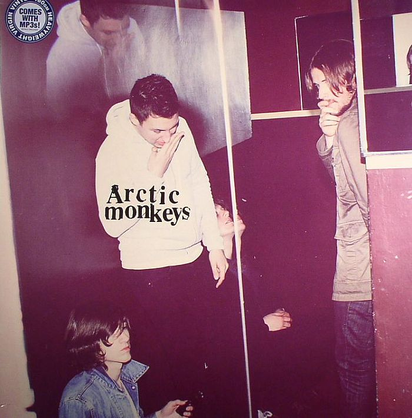

Discografía
-
Whatever People Say I Am, That's What I'm Not (2006)

- «The View from the Afternoon»
- «I Bet You Look Good on the Dancefloor»
- «Fake Tales of San Francisco»
- «Dancing Shoes»
- «You Probably Couldn't See for the Lights But You Were Staring Straight at Me»
- «Still Take You Home»
- «Riot Van»
- «Red Light Indicates Doors Are Secured»
- «Mardy Bum»
- «Perhaps Vampires Is a Bit Strong But...»
- «When the Sun Goes Down»
- «From the Ritz to the Rubble»
- «A Certain Romance»
-
Favourite Worst Nightmare (2007)

- «Brianstorm»
- «Teddy Picker»
- «D Is For Dangerous»
- «Balaclava»
- «Fluorescent Adolescent»
- «Only One Who Knows»
- «Do Me A Favour»
- «This House Is A Circus»
- «If You Were There, Beware»
- «The Bad Thing»
- «Old Yellow Bricks»
- «505»
-
Humbug (2008-2010)
- «My Propeller»
- «Crying Lightning»
- «Dangerous Animals»
- «Secret Door»
- «Potion Approaching»
- «Fire And The Thud»
- «Cornerstone»
- «Dance Little Liar»
- «Pretty Visitors»
- «The Jeweller's Hands»
-
Suck It and See (2011-2012)

- «She's Thunderstorms»
- «Black Treacle»
- «Brick by Brick»
- «The Hellcat Spangled Shalalala»
- «Don't Sit Down 'Cause I've Moved Your Chair»
- «Library Pictures»
- «All My Own Stunts»
- «Reckless Serenade»
- «Piledriver Waltz»
- «Love Is a Laserquest»
- «Suck It and See»
- «That's Where You're Wrong»
-
AM (2012-2014)
- «Do I Wanna Know?»
- «R U Mine?»
- «One For The Road»
- « Arabella»
- «I Want It All»
- «No.1 Party Anthem»
- «Mad Sounds»
- «Fireside»
- «Why'd You Only Call Me When You're High?»
- «Snap Out Of It»
- «Knee Socks»
- «I Wanna Be Yours»
-
Tranquility Base Hotel & Casino (2018-2019)

- «Star Treatment»
- «One Point Perspective»
- «American Sports»
- «Tranquility Base Hotel & Casino»
- «Golden Trunks»
- «Four Out of Five»
- «The World's First Ever Monster Truck Front Flip»
- «Science Fiction»
- «She Looks Like Fun»
- «Batphone»
- «The Ultracheese»